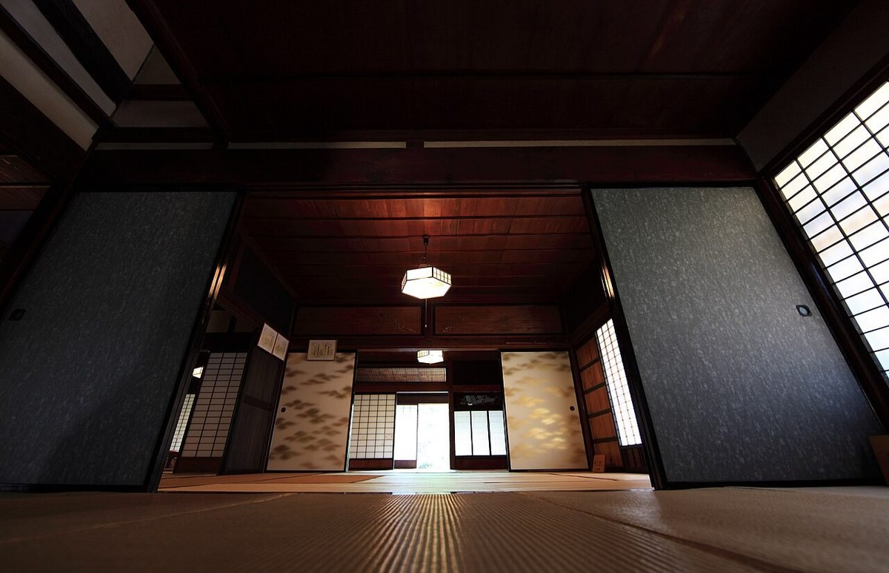
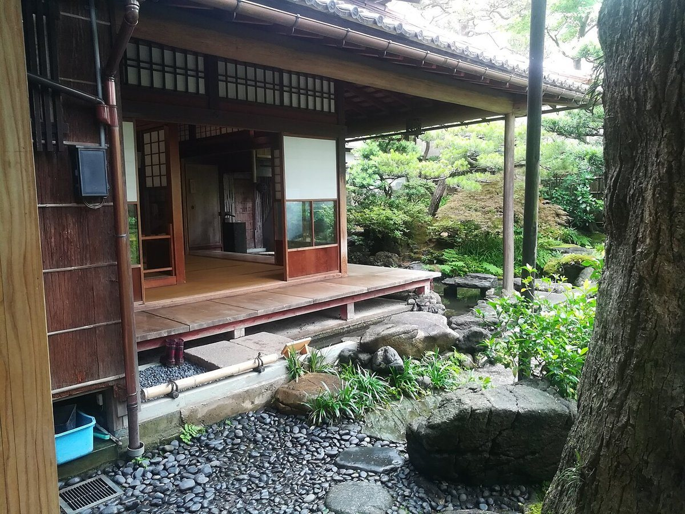
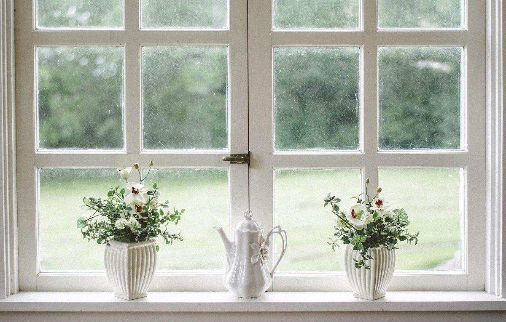
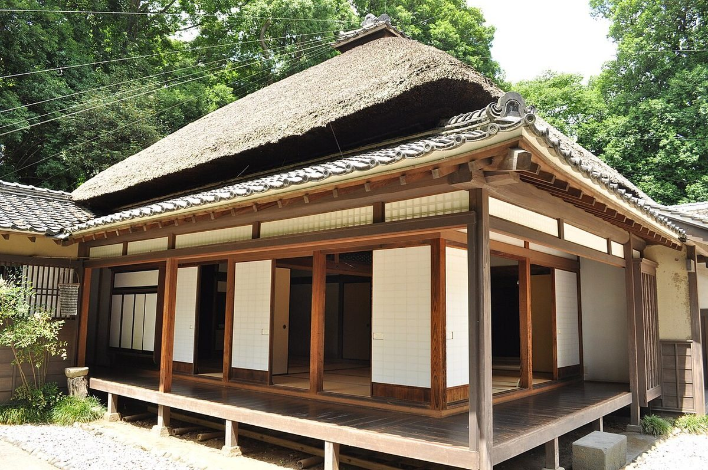
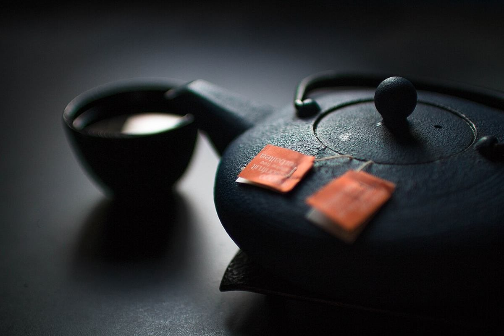
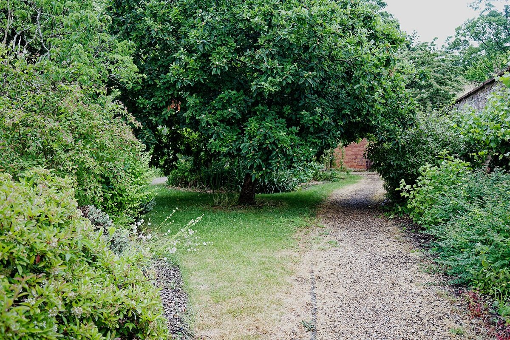

ABOUT
古い家の時間が、そのまま流れるカフェ
ヒラオカフェは、佐久市上平尾の集落にある古民家カフェです。築120年ほどの古民家を改築した建物で、和と洋、古さと新しさが混ざり合う空間だと紹介されています。
縁側からは庭が見え、振り子時計が時を刻みます。畳の座敷もあり、店内には昭和の面影を残すレトロな鍋や食器などの雑貨が並び、販売されているとのことです。
上記は公開されている紹介記事などで確認できた内容です。お店の成り立ちやオーナーさんの想いについては確認できていないため、ここでは書いていません。






VOICE
口コミ(イメージ例)
以下は制作側が作成したイメージ例であり、実在のお客様の声ではありません。
イメージ例
古い家の縁側が見える席で、ゆっくり過ごせました。時間を気にせず座っていられそうな雰囲気です。
イメージ例
プリンやクリームソーダなど、昔ながらのメニューにほっとしました。子どもと一緒でも入りやすそうです。
イメージ例
道が細い集落の中にあるので、行く前にInstagramで場所や最新情報を確認しておくと安心だと思います。
ACCESS
アクセス・ご案内
| 所在地 | 〒385-0002 長野県佐久市上平尾１０３３ |
|---|---|
| 電話 | 準備中 |
| 営業時間 | 準備中 |
| 定休日 | 準備中 |
| 駐車場 | 準備中 |
| SNS | Instagram @hirao_cafe |
上平尾の集落は道幅が狭いと紹介されています。お出かけの際はご注意ください。